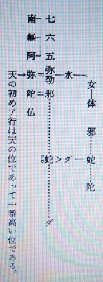
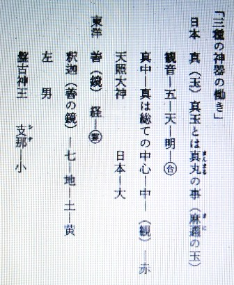

神と経綸について ２
明主様御講義 「宗教の根源と救世主の出現」 （昭和10年7月25日発行）
「地上の御経綸については、初め国常立尊が善一方の世界を出現させるべく御経綸遊ばされたが、
余り厳格なりし為諸々の神様が非常に煙たがり反対された為にこれは失敗し、いよいよ善悪二通りで進む事と今後なるのである。
二千六百年以前神武天皇に御神勅ありて日本統治をなされた。
素盞嗚尊は西洋にてイスラエル民族を造られたのである。
それがユダヤ民族であって、学問を以て世を開発することをお始めになられたのである。
一方伊都能売大神様を印度にお降しになり、布咀落迦（ふだらか）山にて南海大士観世音菩薩として仏教をお始めになり、この山にて仏教を釈迦に伝えられたのである。
その時の釈迦の名は善財童子と申されたのであるが、未だ若かりし時既に教を受けて居られたのである。
皆これは主神様が準備をなされたのである。
今日本においては神道、仏教、基督（キリスト）教とあるが、神道は一寸宗教とは言難いのである。
その中で天理教及金光教が宗教の形態をなし、公認教ではないが大本教も相当発展している、神道中での宗教であると言う事が出来る。
金光教は余り教理としても完全なものはないが大本、天理の二教は相当に形態をなしている。
キリスト教信者は日本で十万と言うが今は十万とはない。
華厳経に布咀落迦山に観世音菩薩あり、善財童子等大慈大悲教を説かれるのを聞いて居られたが、
その中に既に沢山の弟子が居られ、中にも侍者として二十八部衆在り、大弁財天、大梵天王、帝釈天王、金色孔雀、毘舎門天、阿修羅王等の外、ナーラヤナ金剛、ワーデラバーニ金剛の兄弟二人（この二人を仁王尊という）等の諸天が居られたとあるのを見ても、御釈迦様は観音様から御教を受けたことがよく判ります。
支那天台の祖南岳大師の記にも、「昔は霊山会場にあって妙法蓮華経を説き給い、今は西方浄土に在まして阿弥陀仏と名付け奉る。しかも人界普現して救世（くぜ）観音菩薩となり給う。故に過去現在未来に渉る三世の利益は元観音一体に帰す」とあります。
霊山会場とは布咀落迦山のことであります。
こういう訳で南岳大師の言うごとく、法華経も実は観音様が最初の骨子を説かれたもので、未来に渉り世界経綸の鍵は釈迦が七十三歳の時に観音様から秘かに示されたのである。
故に釈尊は吾七十三にして顕真実を得たと言われるのも、この事を指して言われたのであります。
それ故正法、像法、末法の後は仏滅が来る事を知らされたのであります。
仏が減すると言うことは観音様から知らされて初めて知られたのであります。
阿弥陀や釈迦は自分の事より外に出来んが、観音様は三位一体の御働きが出来る。
その観音様が御力を現わして居られないのは、阿弥陀と釈迦を余りにもてはやし過ぎて観音様を除外なされて居られた為であって、実に怪しからん事であります。
世界は仏教、キリスト教、マホメット教とこの三大宗教であって、これを主神が御中付になって造られたのであります。
仏教を説くには南無阿弥陀仏、南無妙法蓮華経の事から説いて行く事になります。
是を説いたのは釈迦如来である。逆如来となる。「さかさ」の意味なり。


仏華を咲かせる経綸である。
花は決して長く咲くものにあらず
一時の事にて、日蓮宗は世間よく一代法華という。
南無妙法蓮華経の事を称して七字の称号と言う。

日月即ち神を隠して妙の字と変えたのである。
日月とは観音様の事である。
カミは大の字にして五である。
南無阿弥陀仏の事を称して六字の名号と言う。

天の初めア行は天の位であって一番高い位である。
仏とは人間の向上したるものにして神の次のものなり。
天は五、中界六、地は七である。逆の弥勒の悪の教。
阿弥陀は素盞嗚尊の化神なり。

支那ー中華ー支那とは枝の事、エの事。
大＝日
中＝中華
小＝外国
（五字称号） 大
大は五大州にして五大州は日本を象ったものなり。
仏教には密教と顕教とあり、密教は六ケ敷（むずかし）いのである。
天台宗には一番多くあて字がある。
主神が素盞嗚尊に命ぜられユダヤ民族を造られ、物質を始められる様になられたのであるが、皆これは今まで来るべき道程で主神の御経綸であった。
未 来 過 去 現 在
最勝妙如来 正法妙如来 普光山王如来
日―観音―南海大士 三十三相どころか非常に沢山に御名がある。
勢至（せいし）菩薩といえば観音と共に働く時の名である。
（観音勢至 五十七歳）
月・・・裏・・・素盞嗚尊が月の神であってこれは暗の時の働きである。
月・・・表・・・月読尊も月の神であるが、これは照されている時の働きである。

月読尊とは月の世を見る
即月世見である。」 （「観音講座 第二講座」より）
明主様御講義 「悪の経綸」 （昭和10年7月25日発行）

東洋 印度
月の照った時は阿弥陀如来（善）慈悲
暗の時は大六天魔王（悪）武力
西洋 猶太（ユダヤ）
月の照った時はイエス（善）愛
暗の時はガガールの神（悪） 学、金力、マッソン又はフリーメーソンー共産主義
「日本の武家時代は大六天魔王の活動であった。
今でも未だこれがある。
これ皆 素盞嗚尊の悪の経綸にして、それが為に現今のごとく物質文化が発達して来たのであるから、これも必要なる悪の経綸である。
これらのことをキリスト教や仏教が聞いたならば驚く事ならんも、今までの事実なのだから致し方ないのである。
二千年前にユダヤに石屋組合があった。
それからユダヤ人が中心となり、世界統一の陰謀国となったので、
それが今日においては全世界の富の四分の三を持っていて、
なおその外 言論機関の四分の三を占めている。
これは欧州米国等ばかりでなく、日本までも手を延して言論機関は今や掌握されそうである。
四五年この方朝日、日日等は占領されて終ったのである。
これらは皆ユダヤの資本家の手に帰して終ったのである。
読売も半分も手に入った。
フリーメーソンは日本でも大臣級の人が入っていて、英国皇帝もフリーメーソンの一員である。
医者（イシヤ）
石屋フリーメーソン医術により人間の命を縮め様としていたので、ユダヤ人の作った医学である。
今や日本の人達の生命はユダヤ人が医者を通じて握ってしまったのである。
進歩したかのように教えられながら誤魔化されているのである。
日本人もイシヤに騙されているのである。」 （「観音講座 第二講座」より）
明主様御講義 「弥勒三会」 （昭和10年7月25日発行）
三尊の弥陀と五六七
五、応身弥勒―観世音－子－璽－火－日－日本－合一－十－真
六、法身弥勒―阿弥陀－母－剣－水－月－西洋－体 －緯－美
七、報身弥勒―釈 迦－父－鏡－土－地－東洋－霊 －経－善
弥勒三会 （三位一体）
日－太陽－観世音－伊都能売尊－応身弥勒
月－月球－阿弥陀－素盞嗚尊－法身弥勒
地－地球－釈 迦－若姫岐美尊－報身弥勒
「三位一体という言葉が残されているのは、三尊者合一するという意味である。
法身は水の働きのみ、現世よりも霊界即ち浄土へ救うのが眼目で、西方へ浄土を造るから仏（覚者）となった。
お弟子を寄こされたいと釈迦に誓って西方へ行かれた。
寂光の浄土と云い、寂光とは淋しい光即ち月の光で月の霊界である。
キリスト教では天の父と天の子と聖霊とにて三位一体という。仏教は祖先を祭り子孫へこれを残して行く故狭い。
仏 教－経－父－小乗－火－東－男－善
キリスト教－緯－母－大乗－水－西－女－悪
仏教は階級愛－忠孝。東洋民族は善人である。支那の悪は西洋文明に禍（わざわい）されたのである。善なる為に体を無視する。
キリスト教は隣人愛－夫婦愛－西洋人は悪なる為に体を本意とするのである。しかし、経も緯も悪いがこれを結ぶと良いのである。
イエス・キリストは礫刑に成ったがこれになる様にと印を付けたのである。
この経緯を結ぶのが観音会の使命である。」 （「観音講座 第二講座」より）
明主様御講義 「三種の神器の働き」 （昭和10年7月25日発行）

日本 真（玉）真玉とは真丸の事（麻邇の玉）
観音－五－天－明－合
真中－真は総ての中心－中－（観）－赤
天照大神 日本－大
東洋 善（鏡） 経－霊
釈迦 （善の鏡）－七－地－土－黄
左 男
盤古神王 支那－小
西洋 美（剣）緯 剣は飾り （人を切らぬ）（身を守る）
劒（つるぎ）は人を切る劒（ヤイバ）
阿弥陀（阿弥陀の利剣） 六
右－女－中－雲－白－体
素盞嗚尊－朝鮮－中
（「観音講座 第二講座」より）